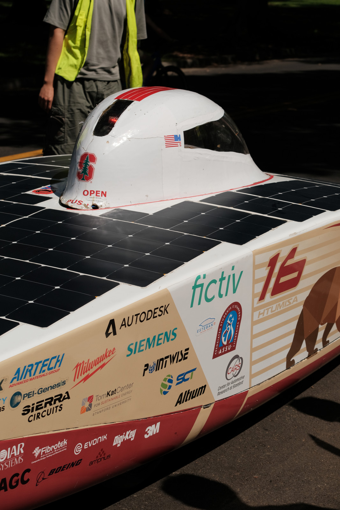
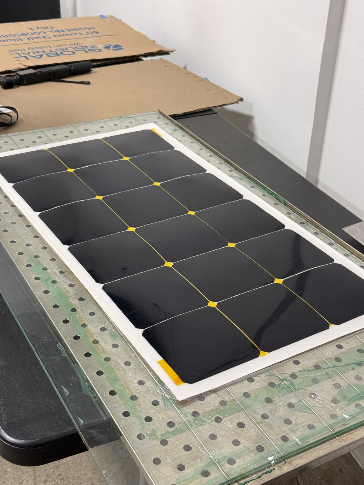
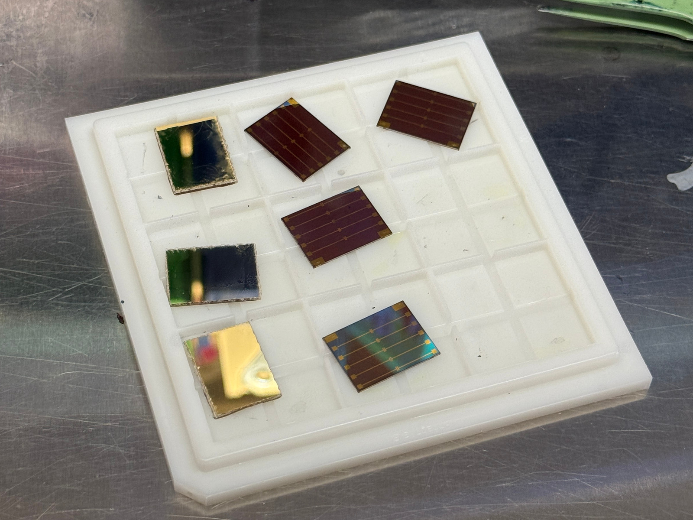
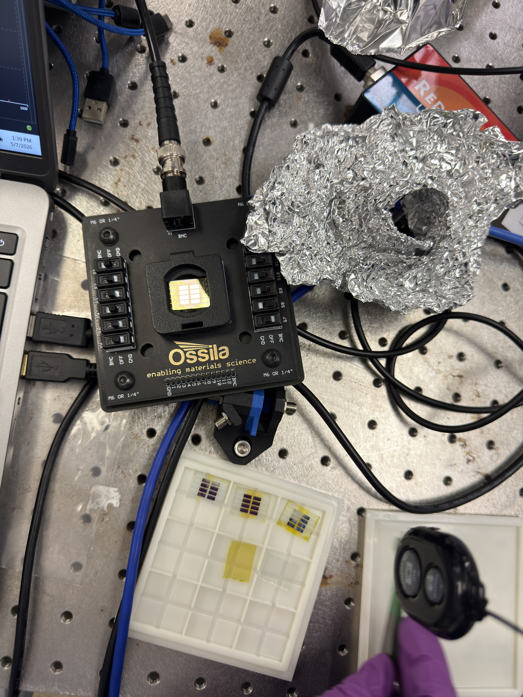

What happens to a device once it leaves the cleanroom and has to work
in a system, and how to most efficiently use the energy it
generates.
Stanford Solar Car ProjectArray & BatteryOct 2025 – present
Getting every watt off the array
The team was budgeting array power from cell datasheets, which
ignores everything that happens between a bare cell and an
encapsulated module on a moving vehicle.
Characterize Maxeon Gen III cells by outdoor four-wire IV sweep
on a Keithley 2461, and analyze 3×6 modules for mismatch loss
to inform cell binning and array layout.
Lead infrared and electroluminescence inspection to find
hotspots, cracks and interconnect faults; piloted a new
encapsulation method for durability and water-ingress
resistance.
Build Python tools modelling bypass-diode configurations and
temperature-driven efficiency loss, to inform thermal and cooling
design for the next-generation array.

Azimuth and its array.

A module we encapsulated in-house. We are building a
new car (the first in over half a decade!!).
Audited 320 common spaces across 45 buildings and roughly 2,900
lighting elements to map occupancy-sensor coverage, found only
36.9% of spaces had them.
Built an ROI model from the audit data projecting 66,421 kWh and
$11,941 in annual savings against $65,650 upfront, a payback of
about 5.5 years.
Evaluated vendors and specified hardware for a window-sensor
HVAC pilot.
MATSCI 164Electronic and Photonic Materials and Devices Laboratory
Organic transistors and OLEDs
Fabricated bottom-gate PDBT-co-TT organic thin-film transistors
(OTFTs) with a PFBT self-assembled monolayer on the gold contacts,
confirmed
by goniometry (36.7° to 64.3° contact angle). Extracted
threshold voltage and saturation mobility from transfer curves and
measured 13% higher mobility, consistent with reduced interfacial
trap density.
Built F8BT OLEDs with PEDOT:PSS and PFN-Br injection layers and a
100 nm aluminum cathode evaporated at SNF. Used matched
electroluminescence and photoluminescence peaks to attribute an
anomalously high turn-on voltage to spin-coating defects rather than
interlayer energetics.

OTFT devices.

OLED devices from the class project.
Previously
Wetland Ecosystems GroupStanfordJun 2025 – Jun 2026
Examining drought impacts on wetlands in Louisiana, Maryland and
Florida
Tracked wetland change across all three states by remote sensing,
with geospatial analysis in Google Earth Engine, ArcGIS and R.
Supported fieldwork in Louisiana.
Processed 150+ samples back on campus by
cryomilling, acid digestion, CHN elemental analysis and ICP-OES to
get their C:N:P ratios.
Wrote the sample-prep SOP for cryomilling and
digestion.
Second author on an AGU abstract.
This was my first research position at Stanford, where I first got
hands-on lab and data analysis experience.
Stanford Energy Clubwith Verne
Composite pressure vessels for cryo-compressed hydrogen
Project work on COPV design considerations for a hydrogen storage
startup.